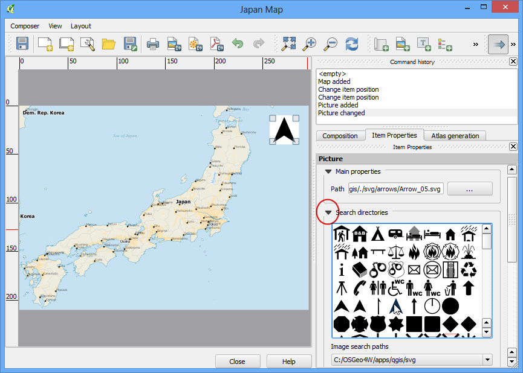
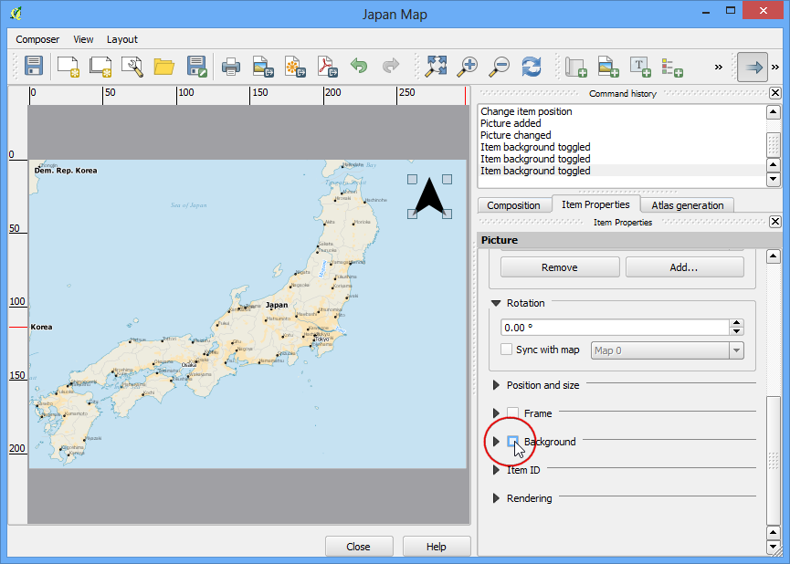

Using Custom Python Expression Functions
[ Download PDF A4 Letter ]
Expressions in QGIS have a lot of power and are used in many core features -
selection, calculating field values, styling, labelling etc. QGIS also has
support for user-defined expressions. With a little bit of python programming,
you can define your own functions that can be used within the expression
engine.
Overview of the task
We will define a custom function that finds the UTM Zone of a map feature and
use this function to write an expression that displays the UTM zone as a map
tip when hovered over the point.
Other skills you will learn
- How to use the Map Tips tool to display custom text when hovering over a
feature.
Procedure
- Open QGIS and go to .

- Browse to the downloaded ne_10m_populated_places_simple.zip file and
click Open.

- Go to .

- Switch to the Function Editor tab. Here you can write any
PyQGIS code that will be executed by the expression engine.

- We will define a custom function named GetUtmZone that will calculate
the UTM zone number for each feature. Since custom functions in QGIS work at
the feature level. We will use the centroid of the feature’s geometry and
compute the UTM Zone from the latitude and longitude of the centroid
geometry. We will also add a ‘N’ or ‘S’ designation to the zone to indicate
whether the zone is in the northern or southern hemisphere. Type the
following code in the editor, enter the name of the file as utm_zones.py
and click Save file.
Nota
UTM Zones are longitudinal projection zones numbered from 1 to 60. Each UTM
zone is 6 degree wide. Here we use a simple mathematical formula to find the
appropriate zone for a given longitude value. Note that this formula doesn’t
cover some special UTM zones.
import math
from qgis.core import *
from qgis.gui import *
@qgsfunction(args=0, group='Custom')
def GetUtmZone(value1, feature, parent):
centroid = feature.geometry()
longitude = centroid.asPoint().x()
latitude = centroid.asPoint().y()
zone_number = math.floor(((longitude + 180) / 6) % 60) + 1
if latitude >= 0:
zone_letter = 'N'
else:
zone_letter = 'S'
return '%d%s' % (int(zone_number), zone_letter)

- Click Run Script. This will execute the python code and register
the function GetUtmZone with the expression engine. Note that this is
needed to be done only once. Once the function is registered, it will always
be available to the expression engine.

- Switch to the Expression tab in the Select by
expression dialog. Find and expand the Custom group in the
Functions section. You will notice a new custom function
$GetUtmZone in the list. We can now use this function in the expressions
just like any other function. Type the following expression in the editor.
This expression will select all points that fall in the UTM Zone 40N.
Click Select.

- Back in the main QGIS window, you will see many points highlighted in
yellow. These are the points falling in the UTM Zone we specified in the
expression.

- You saw how we defined and used a custom function to select features by
expression. We will now use the same function in another context. One of the
hidden gems in QGIS is the Map Tip tool. This tool shows user-defined
text when you hover over a feature. Right-click the
ne_10m_populated_places_simple layer and select Properties.

- Switch to the Display tab and select HTML. Here you
can enter any text that will be displayed when you hover over the features
of the layer. Even better, you can use layer field values and expressions
to define a much more useful message. Click on the Insert
expression... button.

- You will see the familiar expression editor again. We will use the
concat function to join the value of the field name and the result
of our custom function $GetUtmZone. Enter the following expression and
click OK.
concat("name", ' | UTM Zone: ', $GetUtmZone)

- You will see the expression entered as the value of the Display
text. Click OK.

- Before we proceed, let us de-select the features that were selected in the
previous step. Go to .

- Activate the Map Tips tool by going to .

- Zoom into any area of the map and put your mouse cursor over any feature.
You will see the name of the city and corresponding UTM zone displayed as
the map tip.
